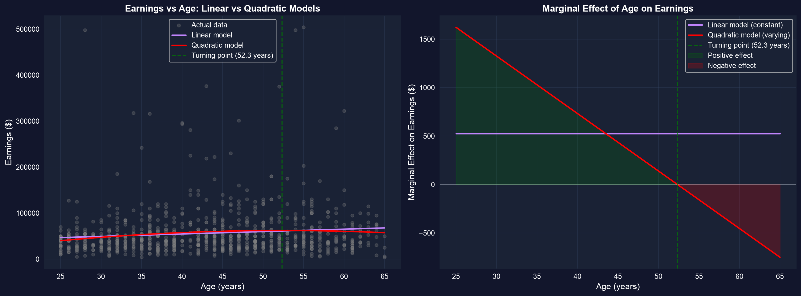
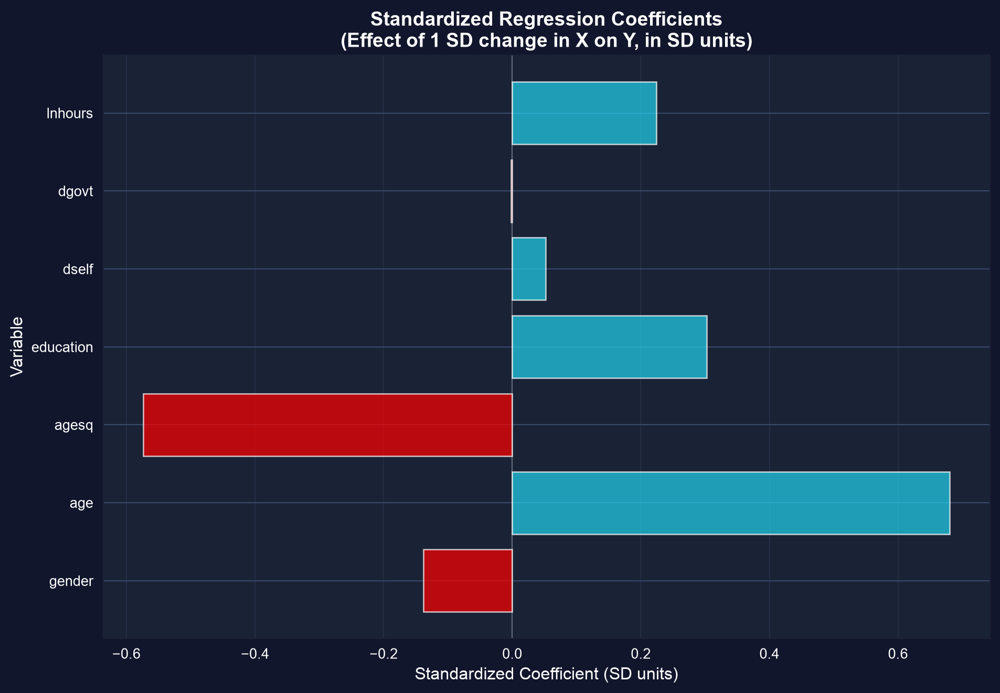
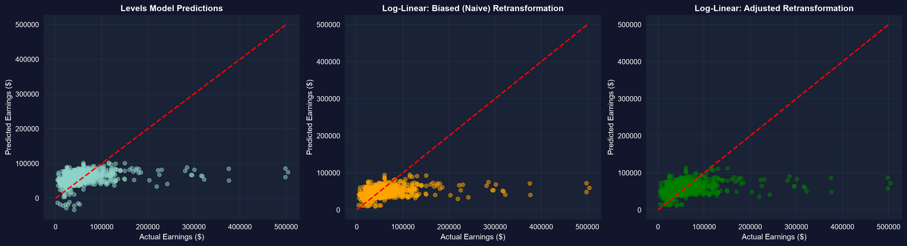

Act I · Straight lines don’t fit everything
Earnings don’t rise with age in a straight line — they climb fast when you’re young, flatten in mid-career, and fall near retirement. A plain earnings ~ age line misses all of it.
The fix isn’t to abandon OLS. It’s to transform the variables — logs, squares, interactions — so a model that is still linear in its coefficients can trace a curved story.
One dataset — 872 workers — runs through every transformation.
AED_EARNINGS_COMPLETE.DTA — 872 full-time workers aged 25–65 (2000), with earnings, age, education, hours, sector, and gender.
import pandas as pd # tabular data
import numpy as np # logs, squares, z-scores
url = "https://raw.githubusercontent.com/quarcs-lab/data-open/master/AED/AED_EARNINGS_COMPLETE.DTA"
data = pd.read_stata(url) # 872 full-time workers, aged 25-65, year 2000
data[["earnings", "age", "education"]].describe().round(1) # scale before you modelAct II · The transformations
Three specifications of the same relationship — and three different interpretations.
import pyfixest as pf # OLS with R-style formulas
# (pandas, numpy already loaded; data = AED_EARNINGS_COMPLETE)
data["lnage"] = np.log(data["age"]) # log of age, for the log-log model
# lnearnings already in the data; = np.log(earnings)
levels = pf.feols("earnings ~ age + education", data=data, vcov="HC1") # $ per unit
loglin = pf.feols("lnearnings ~ age + education", data=data, vcov="HC1") # % per unit (Mincer)
loglog = pf.feols("lnearnings ~ lnage + education", data=data, vcov="HC1") # elasticity on age
loglin.summary() # the Mincer earnings equationLog-linear \(\beta\) as a percent is an approximation — the exact effect is \(100(e^{\beta}-1)\%\), and the gap matters once \(|\beta| > 0.1\).
Add age-squared: the slope on age is now \(\beta_2 + 2\beta_3\,\text{age}\) — it changes with age.
!pip install -q pyfixest # pyfixest isn't preinstalled in Colab (-q = quiet)
import pandas as pd; import numpy as np; import pyfixest as pf
url = "https://raw.githubusercontent.com/quarcs-lab/data-open/master/AED/AED_EARNINGS_COMPLETE.DTA"
data = pd.read_stata(url) # 872 workers
quad = pf.feols("earnings ~ age + I(age**2) + education", data=data, vcov="HC1") # age + age^2
b2, b3 = quad.coef()["age"], quad.coef()["I(age ** 2)"] # linear & quadratic terms
turning_point = -b2 / (2 * b3) # age where the slope hits zero (earnings peak)
print(f"peak earnings at age {turning_point:.0f}") # ~ 52
print(f"marginal effect at 25: {b2 + 2*b3*25:,.0f}") # ~ +$1,600 / yr
print(f"marginal effect at 60: {b2 + 2*b3*60:,.0f}") # ~ -$450 / yr
Fitted earnings against age (education held at its mean): the inverted-U life-cycle profile the quadratic recovers.
The slope is +$1,600/yr at 25, $0 near age 52, and −$450/yr at 60 — one regressor, three marginal stories.
Dollars-per-year and log-hours can’t be compared raw. Re-express every variable in SD units.
# z-score each variable: (x - mean) / sd → coefficients become "SD of y per SD of x"
cols = ["earnings", "age", "agesq", "education", "lnhours"]
z = data[cols].apply(lambda s: (s - s.mean()) / s.std()) # standardized copies
mz = pf.feols("earnings ~ age + agesq + education + lnhours", data=z, vcov="HC1")
mz.coef().round(3) # beta* weights — now directly comparable
# age & age^2 dominate; among the rest, education and lnhours carry the most weight
Standardized (\(\beta^*\)) coefficients: age and its square dominate; education and log-hours lead the rest.
A standardized coefficient answers “which regressor moves earnings most per SD of effort?” — comparable across units.
Does a year of schooling pay the same at 25 as at 55? Multiply the two regressors and test it.
inter = pf.feols("earnings ~ age * education", data=data, vcov="HC1") # age, education, age:education
# return to education at a given age = beta_educ + beta_(age:educ) * age
be, bx = inter.coef()["education"], inter.coef()["age:education"]
print(f"return at 25: {be + bx*25:,.0f}") # ~ +$5,241 / education-year
print(f"return at 55: {be + bx*55:,.0f}") # ~ +$6,112 / education-year
# is the interaction itself distinguishable from zero?
inter.wald_test(R=[[0, 0, 0, 1]]) # H0: beta_(age:education) = 0 -> p ~ 0.60\(\exp(\widehat{\ln y})\) predicts the median, not the mean — it systematically underpredicts. Duan’s smearing correction fixes it with the residuals themselves.
logmod = pf.feols("lnearnings ~ age + education", data=data, vcov="HC1") # s_e ~ 0.62
naive = np.exp(logmod.predict()) # biased: ~ $46k mean (actual ~ $56k)
smear = np.exp(logmod.resid()).mean() # Duan factor = mean(exp(residuals)) ~ 1.21
corrected = naive * smear # smeared prediction
print(f"naive mean {naive.mean():,.0f}") # ~ 46,000
print(f"corrected mean {corrected.mean():,.0f}") # ~ 55,000, matches the data
Predicted vs actual earnings: the naive \(\exp(\widehat{\ln y})\) sits low; the smeared prediction lands on the 45° line.
Always smear before you report dollar predictions from a log model.
Act III · The interpretation traps
Trap. “Log-linear \(\beta = 0.12\) means exactly +12%, and the log-log model fits best because its \(R^2\) is highest.”
Correction. The percent is an approximation (\(100(e^{0.12}-1) \approx 12.7\%\)); and you cannot compare \(R^2\) across models whose dependent variable differs (\(y\) vs \(\ln y\)) — judge them on prediction accuracy or economic plausibility instead.
A transformed coefficient is only as good as its interpretation — know whether you’re reading dollars, percents, or elasticities.